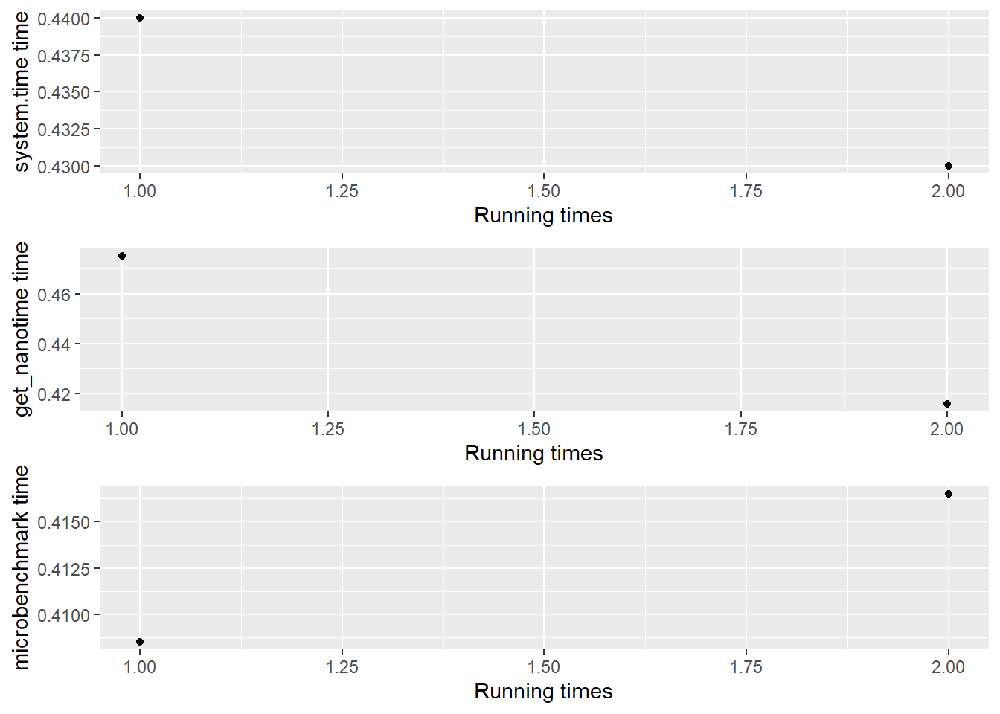
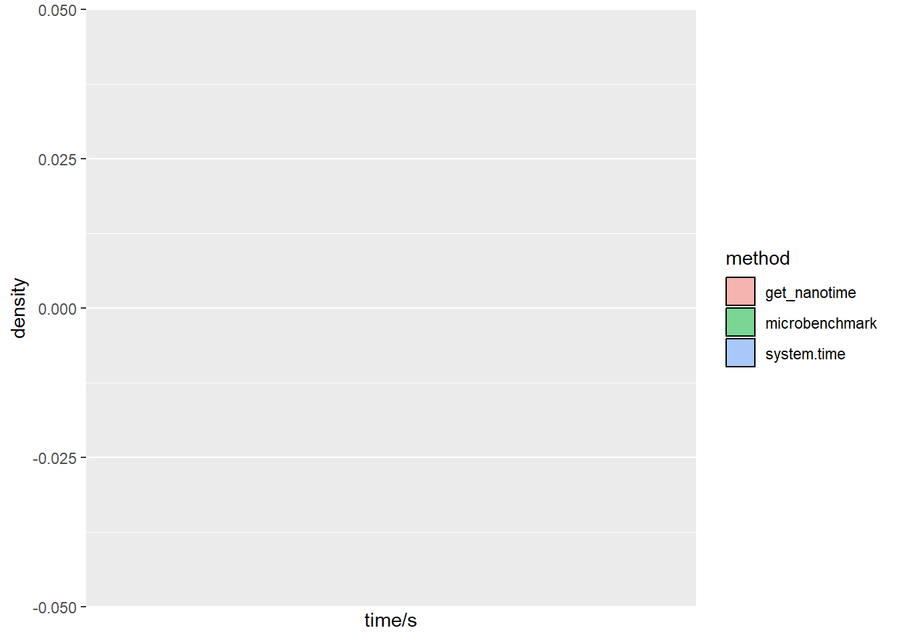
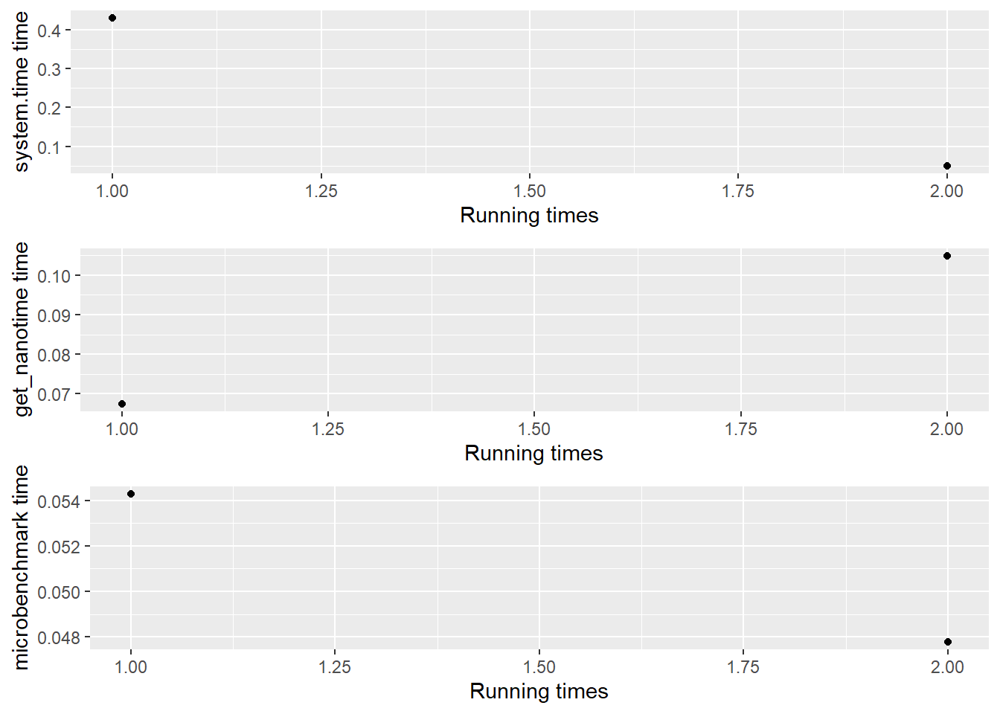

Code
library(YYX)
tid1<-YYX::time_evaluation("a<-rnorm(10000000);b<-'YY'",1)
The first time is excluded from average run times
system.time()
get_nanotime()
microbenchmark()
Rprof()The aim of what I do is to provide some convenience function regarding calculating running time, memory usage, parallelization and treating error for my other functions.(MUVR, TriplotGUI)
MUVR::MUVR(): Perform variable selection and prediction in repeated nested cross-validation
TriplotGUI::TriplotGUIshiny(): The function that opens my shiny app, which do some stuff(doesn’t matter here)
I want to run some code and test the time needed without running it in my global environment.
library(YYX)
tid1<-YYX::time_evaluation("a<-rnorm(10000000);b<-'YY'",1)
The first time is excluded from average run times
system.time()
get_nanotime()
microbenchmark()
Rprof()The code inside is not ran in your global environment, so it will use your memory but not occupy them.
tryCatch({a},
error=function(e){cat("a not found")})a not foundtid1$dotplot
tid1$histplot
tid1$systime_firstime
tid1$nanotime_average
tid1$nanotime_firstime
tid1$systime_average
tid1$microbench_firstime
tid1$microbench_averageuser.self sys.self elapsed
0.42 0.02 0.44
[1] 0.4157822
[1] 0.4750731
user.self sys.self elapsed
0.41 0.00 0.43
[1] 0.408525
[1] 0.4165011## This is to open my shiny app
## remotes::install_gitlab("YingxiaoYan/TriplotGUI")
library(TriplotGUI)
tid2<-YYX::time_evaluation("TriplotGUI::TriplotGUI_shiny()",1)
The first time is excluded from average run times
system.time()
get_nanotime()
microbenchmark()
Rprof()
I want to have a function to modify my ordinary for loop code for parallelizarion (to automatically reformat the code to fit for how you write loops when using doParallel or future package)
#code_to_text
aa<-vector(); bb<-list()
for(i in 1:5){aa[i]<-i;bb[[i]]<-c(i,i+1,i+3)}
aa
bb[1] 1 2 3 4 5
[[1]]
[1] 1 2 4
[[2]]
[1] 2 3 5
[[3]]
[1] 3 4 6
[[4]]
[1] 4 5 7
[[5]]
[1] 5 6 8library(doParallel)
aa<-vector(); bb<-list()
num_cores <- detectCores() - 1
cl <- makeCluster(num_cores) # Init cluster
registerDoParallel(cl)
"%doVersion%" <- get("%dopar%")
cc <- foreach(i = 1:5) %doVersion% {
aa <- i
bb <- c(i, i + 1, i + 3)
return(list(aa, bb))
}
stopCluster(cl)
#cc becomes a list contain aa and bb
cc[[1]]
[[1]][[1]]
[1] 1
[[1]][[2]]
[1] 1 2 4
[[2]]
[[2]][[1]]
[1] 2
[[2]][[2]]
[1] 2 3 5
[[3]]
[[3]][[1]]
[1] 3
[[3]][[2]]
[1] 3 4 6
[[4]]
[[4]][[1]]
[1] 4
[[4]][[2]]
[1] 4 5 7
[[5]]
[[5]][[1]]
[1] 5
[[5]][[2]]
[1] 5 6 8-future
library(future)
plan(multisession);
aa<-c(); bb<-list()
new_env <- new.env();
for(i in c( '1','2','3','4','5' )){
new_env[[ i ]] %<-%{
aa<-i;bb<-c(i,i,i);
list(aa,bb)} };
new_env <- as.list(new_env);
new_env$`1`
$`1`[[1]]
[1] "1"
$`1`[[2]]
[1] "1" "1" "1"
$`2`
$`2`[[1]]
[1] "2"
$`2`[[2]]
[1] "2" "2" "2"
$`3`
$`3`[[1]]
[1] "3"
$`3`[[2]]
[1] "3" "3" "3"
$`4`
$`4`[[1]]
[1] "4"
$`4`[[2]]
[1] "4" "4" "4"
$`5`
$`5`[[1]]
[1] "5"
$`5`[[2]]
[1] "5" "5" "5"for(i in 1:5) {
aa[i] <- i
bb[[i]] <- c(i, i, i)
}1.–> To doParallel format
cc <- foreach(i = 1:5) %dopar% {
aa <- i
bb <- c(i, i, i)
return(list(aa, bb))
}2.–> To future format (From Sebastian’s lab)
plan(multisession);
new_env <- new.env();
for (i in c('1', '2', '3', '4', '5')) {
new_env[[i]] %<-% {
aa <- i
bb <- c(i, i, i)
}
return(list(items))
}
new_env <- as.list(new_env)I haven’t figure out how to transform the text and RUN
aa<-vector(); bb<-list()
cc<-matrix(0,5,5)
code="for(i in 1:5){aa[i]<-i;bb[[i]]<-c(i,i,i);
}"
transform_loop_text_doParallel(code)
When saving output, your code should have format,e.x. a[i]<-1,not a<-c(a,1).
Each line in your loop should have a ';'
Your new foreach loop by doparallel is
result<-foreach(i=1:5)%dopar%{aa<-i;bb<-c(i,i,i);
;return(list(items))}
Note that in your code you will get only one output from each loop. Please adjust your code to put
thing you want in the list, replacing items in the end
.
library(future)
aa<-vector(); bb<-list()
cc<-matrix(0,5,5)
code="for(i in 1:5){aa[i]<-i;bb[[i]]<-c(i,i,i);
}"
transform_loop_text_future(code)
When saving output, your code should have format,e.x. a[i]<-1,not a<-c(a,1).
Each line in your loop should have a ';'
The future code looks like:
new_env <- new.env();
for(i in c( '1','2','3','4','5' )){ new_env[[ i ]] %<-%{ aa<-i;bb<-c(i,i,i);
} ;return(list(items))};
new_env <- as.list(new_env);
Note that in your code you will get only one output from each loop. Please adjust your code to put
thing you want in the list, replacing items in the end
.I want to have a convenience function to calculate how many memeory I will occupy with out running them in my global environment.
library(peakRAM)
code<-"abcd<-rnorm(10000000)"
memory_evaluation(code)1.By gc(verbose=T), memory usage before running your code:
2.By pryr::mem_used(), before running your code, your assumed memory usege is 93.67132 Mb
3. By pryr::mem_change(), you occupied 79.99878 more Mb after your code
4.By gc(verbose=T), memory usage before running your code:
5.By pryr::mem_used(), after running your code, your assumed memory useage is 173.6804 Mb
$memchange
80 MB
$gcchange
[1] 1e+07code<-"abcd<-rnorm(10000000)"
memory_evaluation(code,option="peakRAM")
1.By gc(verbose=T), memory usage before running your code:
2.By peakRAM(), after runing your code, your will use 76.3 Mb ram to save your object.
Your peak ram use is 76.3 Mb.
3.By gc(verbose=T), memory usage before running your code:
$ram_occupied
Total_RAM_Used_MiB
1 76.3
$ram_used
Peak_RAM_Used_MiB
1 76.3I want to run my machine learning algorithm on 400 simulated data (through 400 loops). When sometimes an error occurs, I know it is because the data is simulated to the extreme scenario…
I don’t care about the loop that has error. if an error occurs, I want to ignore that loop and restart that loop (with data simulation)
library(MUVR)
rep=2
trick=6
dataX=Xotu
dataY=Yotu
empty_name<-"vector_1<-vector()
vector_2<-vector()"
some_operation_before<-"dataYPerm = sample(dataY)"
main_function<-"perm=MUVR(X=dataX,Y=dataYPerm,method='RF',
DA=T, modReturn = T, nRep =trick, nOuter=3,varRatio=0.3)
if(rep==sample(c(1:2),1)){trick=trick-1; stop('deliberatly give error')}"
record_values<-"vector_1<- c(vector_1,perm$ber['min'])
vector_2<- c(vector_2,perm$miss['min'])"
output<-"list(vector_1,vector_2)"When I put everything in the function and run them, the vector only record the value given by the last loop.
ignore_loop_error <- function(rep,
empty_name,
some_operation_before = NULL,
main_function,
record_values,
some_operation_after = NULL,
output) {
result <- list()
pp <- 1
p <- 1
########################################
#### empty name
eval(parse(text = paste(empty_name)))
##############################################
while (pp <= rep) {
p <- pp
cat("/loop", pp, "of", rep)
eval(parse(text = paste(some_operation_before)))
tryCatch({
pp <- p
eval(parse(text = paste(main_function)))
##############################
pp <- p + 1
#####################################
}, error = function(e) {
})
if (pp == p + 1) {
## recording
eval(parse(text = paste(record_values)))
}
}
for (i in 1:length(eval(parse(text = paste(output))))) {
result[[i]] <- eval(parse(text = paste(output)))[[i]]
}
text = paste0("c('", substr(output, start = 6, stop = nchar(output) -
1), "')")
text = change_name(text, ",", "','")
if (!is.null(names(eval(parse(text = paste(
output
)))))) {
names(result) <- eval(parse(text = text))
}
return(result)
}When I use the code outside function, it works.
result <- list()
pp <- 1
p <- 1
########################################
#### empty name
eval(parse(text = paste(empty_name)))
##############################################
while (pp <= rep) {
p <- pp
cat("/loop", pp, "of", rep)
eval(parse(text = paste(some_operation_before)))
tryCatch({
pp <- p
eval(parse(text = paste(main_function)))
##############################
pp <- p + 1
#####################################
}, error = function(e) {
})
if (pp == p + 1) {
## recording
eval(parse(text = paste(record_values)))
}
}
for (i in 1:length(eval(parse(text = paste(output))))) {
result[[i]] <- eval(parse(text = paste(output)))[[i]]
}
text = paste0("c('", substr(output, start = 6, stop = nchar(output) -
1), "')")
text = change_name(text, ",", "','")
if (!is.null(names(eval(parse(text = paste(
output
)))))) {
names(result) <- eval(parse(text = text))
}The eval(parse()) way can be messy when it is tangled with many loops. Don’t use it to build functions if several eval(parse()) at different loops.
The end